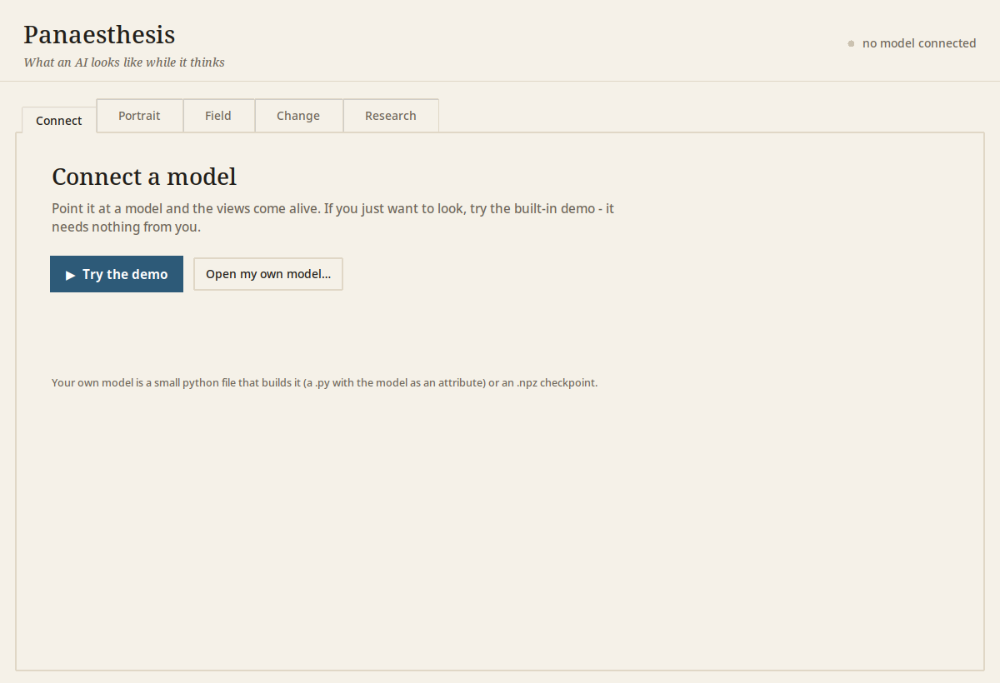
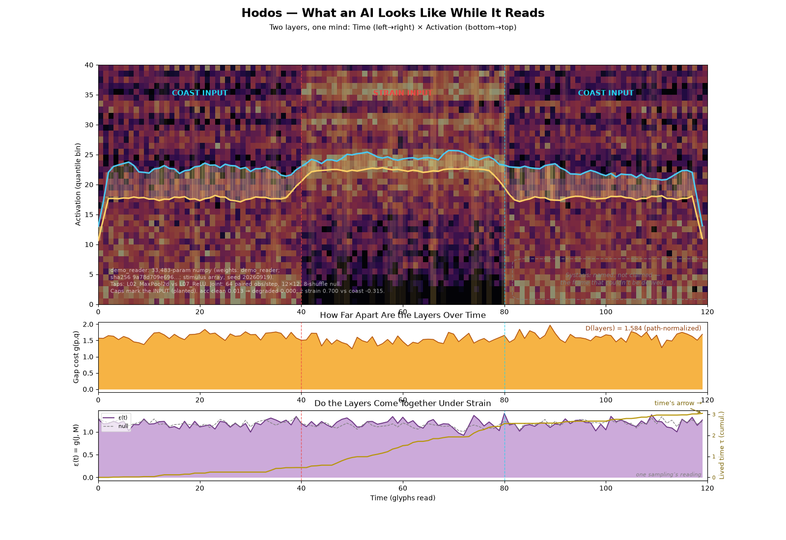
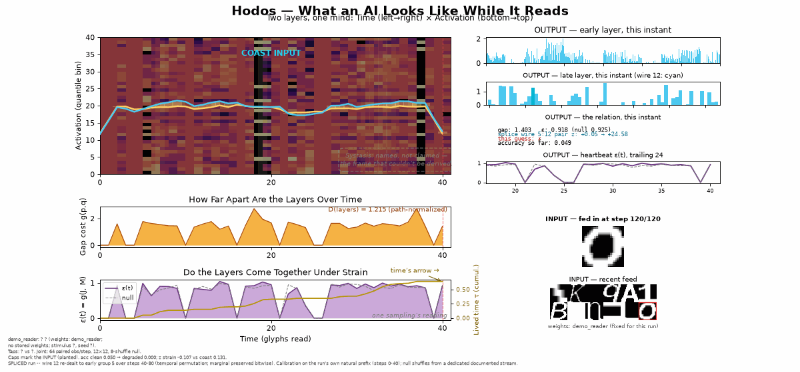
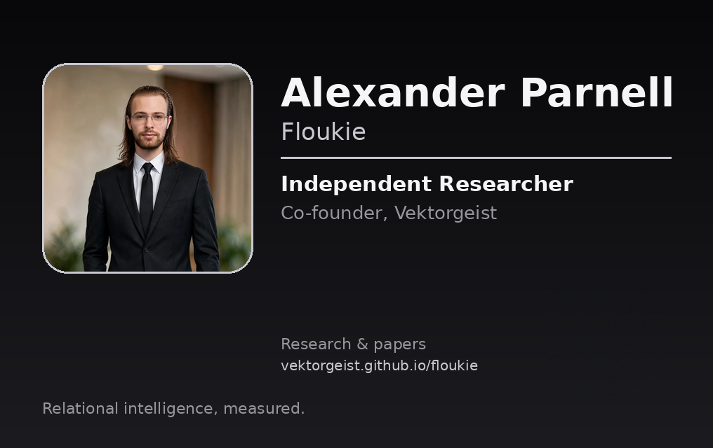

About
Vektorgeist is a research and development company working at the intersection of AI, relational systems, and local-first technology.
Our research programme explores relational ontology, machine self-models, and local-first AI. We study how things hold together: what a thing is, how its parts relate, and what changes when those relations change.
That research is translated into experimental systems and practical tools. Vektorgeist develops local-first AI tools, and other open-sourced instruments for observing and changing relations inside working neural networks.
Vektorgeist was founded by Alexander Parnell and Lee Kersh. Alexander Parnell is an independent researcher who publishes open-access research with permanent DOIs through Zenodo.
Full detail, experiments, and the working record: Vektorgeist research index.
Research
Open-access papers, each with a permanent DOI. All released under CC-BY-4.0.
-
What makes a thing the thing it is?
-
How do you build AI a person can own, inspect and trust?
-
Can a machine’s account of itself ever be trusted?
-
How do you compare two processes without throwing away time?
-
What can a learner do with no trained parameters at all?
-
What happens if you separate computation from knowledge?
-
Does the premise generate anything beyond a ruler?
-
Can the duration a process has lived be computed from its own internal relations?
-
Two systems sit equally far from normal — one drifted over months, the other broke in seconds. Can the shape of the trajectory tell them apart?
-
If nothing is what it is in isolation, how many things does it take to be one thing?
-
Can you watch a working neural network's relations from the inside, change one, and measure what happens, reversibly?
Panaesthesis
Vektorgeist's open-source instrument for observing and changing relations inside working neural networks. One software, three instruments: the Hodoscope watches every relation inside the model, live; the Hodotome changes those relations; the Hodophylax stands guard over them. Install with pip install panaesthesis. PyPI · GitHub.



Links
- GitHub — xfloukiex-lab
- Vektorgeist research index
- YouTube — VEKTORGEIST
- Discord — VEKTORGEIST
- ORCID — 0009-0003-4960-6804
- Google Scholar — profile forthcoming
Research card
